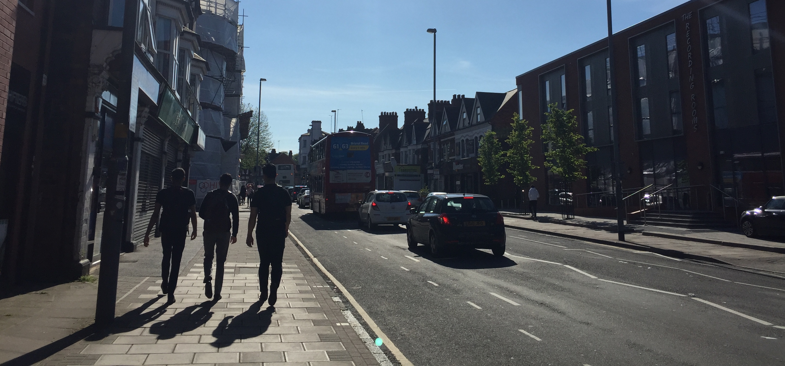
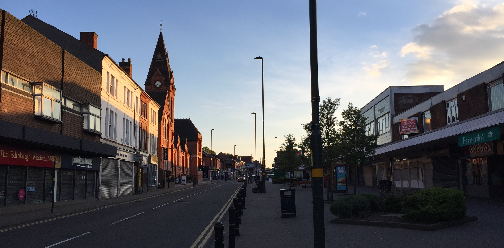
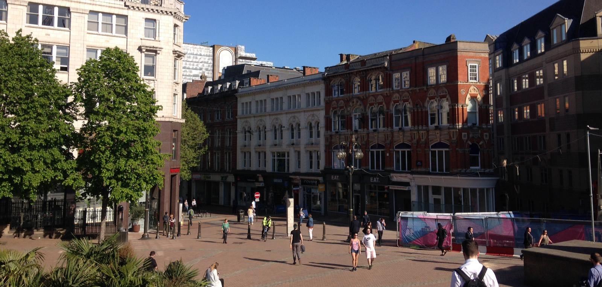

Selly Oak is the preferred neighbourhood for University of Birmingham Undergraduates

Do you like to live in a residential location well-connected to the city centre and enjoy a number of independent retailers? Do you like lindy hop and buddhist meditations? Then Moseley is the place for you!

Do you want to live in a leafy residential area close to the University of Birmingham and just about one mile to the city centre? Then Edgbaston is the place for you!

Do you want to live in a calm and residential area only two train stops away from Aston University? Erdington will be perfect for you!

If you want to live in a residential village with independent shops and restaurants, then Harborne is the place for you!

If you are a city person who cannot live far from one of the world's best concert hall and the best Birmingham shopping mall, consider living in Birmingham city centre!

Do you like to enjoy the peace of the canals and the buzz of Birmingham nightlife? If so, Brindleyplace is a fantastic location for you!